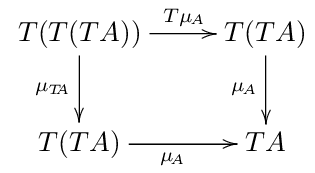
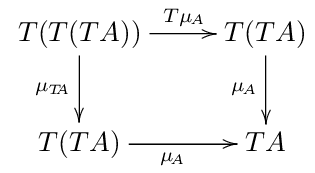

における右側を可換にするような 2つの射 \(FA \rightarrow GA\) 及び \(FB \rightarrow GB\) を 任意の \(f: A \rightarrow B\) に対して 与えるような何か (\(\alpha\)) のことである.
における右側を可換にするような 2つの射 \(FA \rightarrow GA\) 及び \(FB \rightarrow GB\) を 任意の \(f: A \rightarrow B\) に対して 与えるような何か (\(\alpha\)) のことである.この記事における可換図式は全て LaTeX の xy パッケージを用いて作成した. 拡張子の .png を .tex に変えてアクセスすればソースがある.
お互いの両手を用いる二人ゲーム. 手は指を立てることで、1から5の状態を取ることができる. ただし5は0と同一視して、以下 mod5 を取る. プレイヤーは交互に、 自分のどちらかの手で相手のどちらかの手を選択して叩く. 叩かれた手は叩いた手の値だけ加算される. 5になった手は死ぬ. 死んだ手を用いて叩くことはできない. また、死んだ手を叩く対象に選ぶこともできない. 先に両手が死んだ人の負け.
初期状態は、両手ともに1を示している.
初め、メモ化再帰で解こうとしたが、 簡単にループに陥ったのでやめ.
簡単な考察として、
ダイクストラ的に、 ゲーム木の上を自明な解から辿って行くことにする.
状態をテーブル int f[5][5][5][5] で表現する. これからアクションを起こす側の手を \((i, j)\) 、もう一方を \((k, l)\) とするとき f[i][j][k][l] は、 アクションを起こす側が必勝なら、\(1\) 負けるならば \(-1\)、 到達不可能な状態であるならば \(0\) という値を格納させる.
ダイクストラするために適切な初期状態が必要である.
f[0][0][k][l] = -10とした. この 1 (\(((0,0), (k,l)) : (k,l) \ne (0,0)\)) をスタートにして、 ダイクストラ的に、 深さ優先探索を行う.
ソースコードは次の通り. Ideoneは出力まで一緒に載せられるので便利だが、 課金してないと一定時間で消えるそうなので、 gistも合わせて置いておく.
関手 \(F: C \rightarrow D\) とは 圏\(C\) における \(f: A \rightarrow B\) を 正しく \(Ff: FA \rightarrow FB\) に映すような写像であった. つまり、内部に対象を写す写像と射を写す写像の2つを持っている.
2つの関手 \(F, G: C \rightarrow D\) について、 自然変換 \(\alpha: F \rightarrow G\) とは、
における右側を可換にするような 2つの射 \(FA \rightarrow GA\) 及び \(FB \rightarrow GB\) を 任意の \(f: A \rightarrow B\) に対して 与えるような何か (\(\alpha\)) のことである.
便宜上、この2つの射のことを \[\alpha_A: FA \rightarrow GA\] \[\alpha_B: FB \rightarrow GB\] と呼ぶ.
定義としてはこう. モナドとは三組 \((T, \eta, \mu)\) のことであり、 \(T\) は圏から自己圏への関手. \(\eta\) とは \(id \rightarrow T\) という自然変換. \(\mu\) とは \(T \cdot T \rightarrow T\) という自然変換.
条件として、任意の対象 \(A\) について、 次を可換にすること.
 

以上が定義の丸写しである. ちょっと理解が及ばないので、いじって遊んで見ることにする.
まず、ひとつ目の三角の可換図式から.
\(A\) 以外の対象が定義に出てこないのだから、この射を考えるしかしょうがない.
自然変換 \(\eta\) は \(id \rightarrow T\) っていうものなので、 次のような \(\eta_A\) が存在する.

これで、 定義に出てくる射が出揃った. \(\mu_A\) 以外.
定義にある \(\mu_A\) は 一番右下にある \(T(TA)\) から一つ左の \(TA\) または一つ上の \(TA\) のどちらでも行ける.
定義の可換図式は、 次の意味で、\(\eta_{TA}\) と \(T(\eta_A)\) は同じものだと言う.
\[\mu \cdot \eta_{TA} = \mu \cdot T(\eta_A)\]
\(\mu\) についてもう少し.
\(id: A \rightarrow A\) について、自然変換 \(\mu\) は \(\mu_A: T(TA) \rightarrow TA\) という射を導く. これをさらに関手\(T\) で写すことができる.

また、\(id: TA \rightarrow TA\) については、自然変換 \(\mu\) によって次を導ける.

これで2つの射 \[T(\mu_A), \mu_{TA} : T(T(TA)) \rightarrow T(TA)\] が得られたことになる.
定義の四角い方の可換図式は、この2つの射を次のように合わせても良いことを言う.